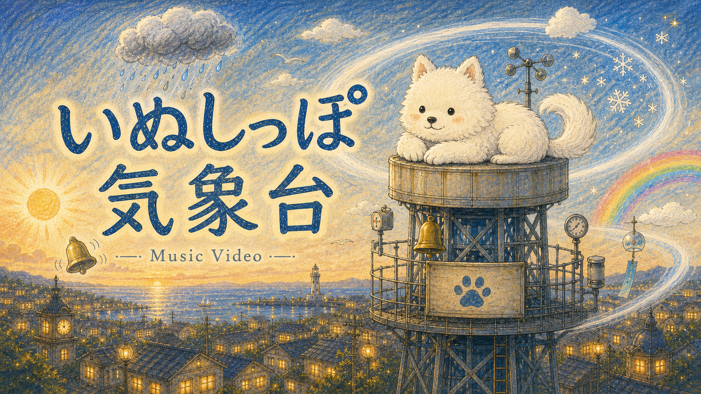

YouTube Music/各種配信ストア リリース曲総数
2026.06.06-06.19(14日間)
定期活動ログ
次回活動報告予定日：7.4

この期間の主な成果/今後の課題
成果：満足いくMV/マスタリングが出来た
課題：MVの数を揃える/ショート動画の作成/定期的なコンテンツ供給
- Youtubeの視聴継続率は大幅に改善成果
- MVだけで回遊してもらえる数が欲しい課題
- 各種導線としてショートは欲しい。まずはYoutube/Tiktok課題
- X楽しい。やりすぎには注意。でもX経由で見てくれる方がたくさんいるので、面白いものは出していきたい。楽しみながら課題
今期の数量的進捗まとめ
返信 112 / 画像付き 41 ※ちょっとやりすぎかもしれない
MV2つ追加 ・カラカラパレット ・いぬしっぽ気象台
MV用画像リール機能を作成 / 演出プレビュー画面を追加 / Grok動画生成テスト作成

次にやること
- マスタリング前楽曲のマスタリング←4曲がSunoだけにある状態
- Youtube横動画の新規追加。コラボこっそり動いてます
- 自作動画制作ツールの改良←楽曲やショートのニーズに合わせながら
- 随時新曲制作。もう夏なのでそのへんの曲とか
- 引き続きX運用。この方の投稿良いなってリポストしたときに反応来るようになったの結構嬉しい

MV紹介
いぬしっぽ気象台
donut sheep
犬の気分で天気が変わる。そんな七浜市の優しい風景。 可愛い安らぎ小気味良く歩くようなテンポでちょっと不思議な街の空を歌います。 ※ちょっとはしゃいでYoutubeにプロモーション申し込んでみました たまにプロモーションの中間報告とかしようカナー
動画を開く制作に使える公開HTML
Music Genre & Instrument Prompt Atlas
大分類から中分類・小分類へ、クリック少なめで見渡せるHTML版です。ジャンルは「地図」、楽器は「発音原理・編成・地域・役割・質感」の複数地図としてまとめました。
Spatial Audio Effects Tool手動マスタリング用のHTMLツール ※自由にHTMLごと持っていってローカルで利用してもらって大丈夫です ちょっとあんまり使えてないのでメンテナンス頻度が微妙💦
MV Nonreal Style Vocabulary Reference画風、媒体、制作技法、素材、漫画・アニメ文法、工芸、デジタル表現の一覧。 ・ChatGPTによる生成画像付き ・Codexのクセ強文章はそのままです
MV Visual Vocabulary Reference映像美術で操作できる要素、表現領域 ・ChatGPTによる生成画像付き ・Codexのクセ強文章はそのままです
制作相談の文字量
Codexでの会話総量
前回比1.5倍！ ※これに引っ張られてX等で喋りすぎることもある(Ꮚ;ᵕᴗᵕ)Ꮚｱ"ｧ"ｰ
Codex制作ログ
制作相談記録
この2週間に動いた制作テーマを、名前と数字で振り返ります。
制作テーマ別の動き
この2週間の制作ログMusicVideoCreator
会話数 151件MV制作/関連機能追加
JustImageCreate
会話数 33件イラスト生成
lyrics
会話数 73件歌詞英訳/案出し/プロンプト洗練
donut-sheep-activity-repo
会話数 5件定期活動報告ログ作成
今期稼働した内部制作スレッド例
Suno向け歌詞の英訳チェック演出プレビュー画面を追加Grok動画生成テスト作成ショート動画をFull Previewに統合カバージャケット用イラスト作成外枠演出を検討MVコンセプト案とアート作成カラカラパレットMVタスク整理MV演出要件を整理リリックモーションビデオ用機能Lyrics Timing音声再生を修正X向けイラスト生成